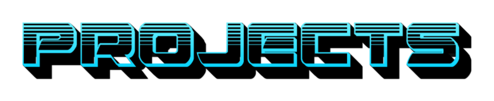
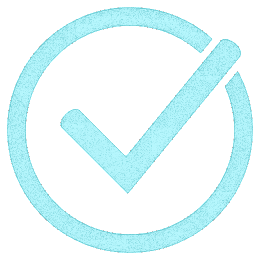
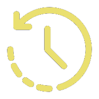

> Current Projects
- Myratha
(Ongoing)
Project Myratha is about the creation of a fantasy universe along with stories, art, animations and mutch more! It is currently under development, the main focus being both the lore and the characters.
> Previous Projects
- Union 
(Completed)
Project Union is about uniting different creatives in order to work on projects collaboratively and to help eachother thrive in creative domains.
- Role Party 
(On Hold)
Project Role Party is linked with project Myratha. In order to make Myratha more attractive and interactive, regular sessions of role playing are to be held to both entertain and flex our creative muscles.
- Custom FNF
(Cancelled)
Project Custom FNF is about creating a custom mod for the previously trending game Friday Night Funkin in order to learn how to do it's charts and to try loop animations. Due to a dwindling interest, the project has been cancelled.